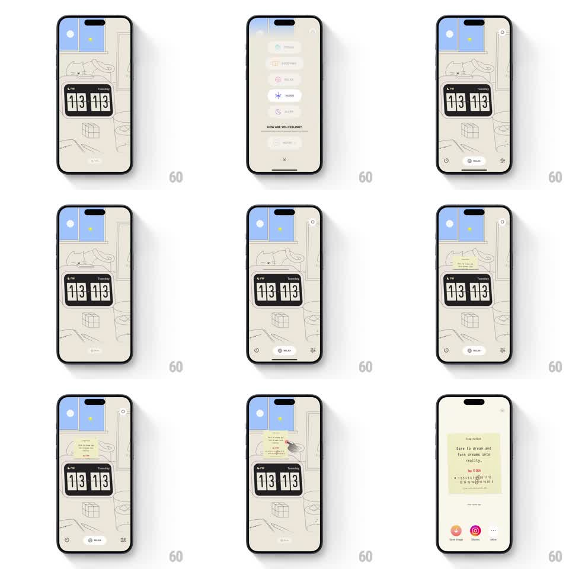

Media
Frame-by-frame

Rebuild this interaction 1:1: a skeuomorphic inspiration sticky note - a yellow note prints out of a slot beside the flip clock, and tapping it expands it into a full-screen note view with a quote, date, and share actions.

Rebuild this interaction 1:1: a skeuomorphic inspiration sticky note - a yellow note prints out of a slot beside the flip clock, and tapping it expands it into a full-screen note view with a quote, date, and share actions. ## Integration Integration: stack-agnostic spec - springs given as stiffness/damping, timed motions as duration + curve; map every value to your framework and animation library of choice. ## Scene Cream line-art home screen: window, flip clock (13 13), bottom pill nav. A small yellow sticky note slides out of a thin slot drawn into the wall art near the window. Full-screen note view: yellow paper with "Inspiration" header, quote "Dare to dream and turn dreams into reality.", date, a mini calendar strip with the day circled, and bottom actions (Save Image, Stories, More). ## Motion spec Pattern: print-out note + tap-to-expand paper. - Note prints out of the slot edge-first: it slides downward 24px over 700ms (ease-out with a slight 100ms judder mid-way, like paper feeding) and rests with a soft drop shadow. - A gentle idle sway follows (rotate ±1.5deg, 2.8s loop) as if the paper hangs. - Tap the note: it expands to full screen from its exact position - scaling and translating to center (spring ~280/24, ~450ms) while its paper texture sharpens and a cream scrim fades in behind (300ms). - Full-screen content staggers in: header, quote, date, calendar strip, actions (50ms apart, fade + rise 8px, 250ms each). - Back/close: the note shrinks back into its slot position (reverse spring, 350ms), scrim fades. ## Calibration - The expansion is a shared-element morph: quote text must be legible only after the note reaches full size (scale text content in late, at ~60% of the transition). - Paper color and ruled texture stay consistent between small and large states. ## Reduced motion Note appears in place; expansion crossfades instead of morphing. ## Don't miss - The slot is part of the illustration - the note emerges from the wall, not from off-screen. - Bottom actions are circular icon buttons with labels (Save Image, Stories, More).